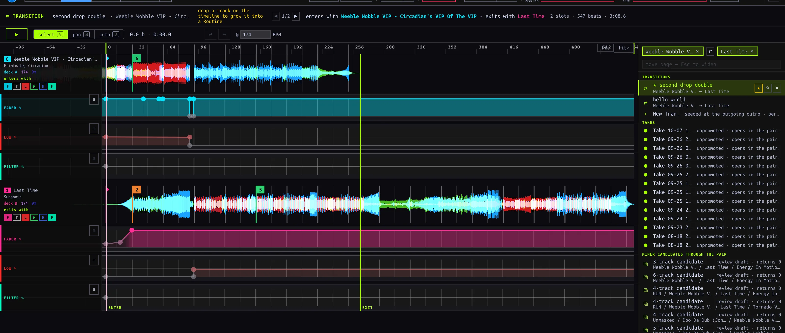
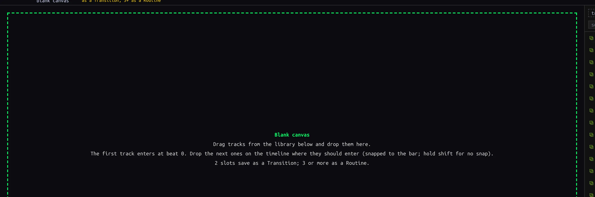
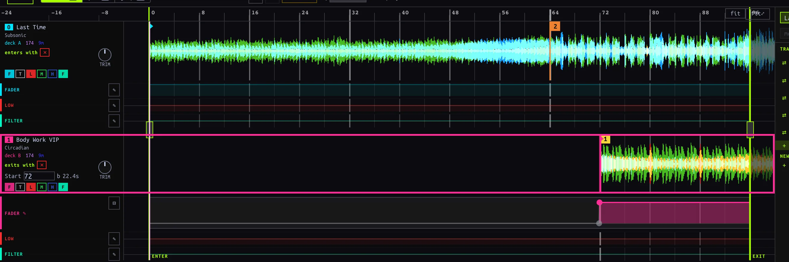
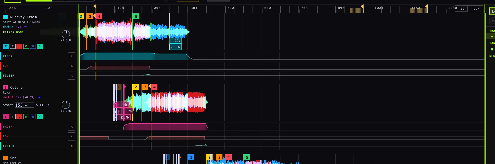
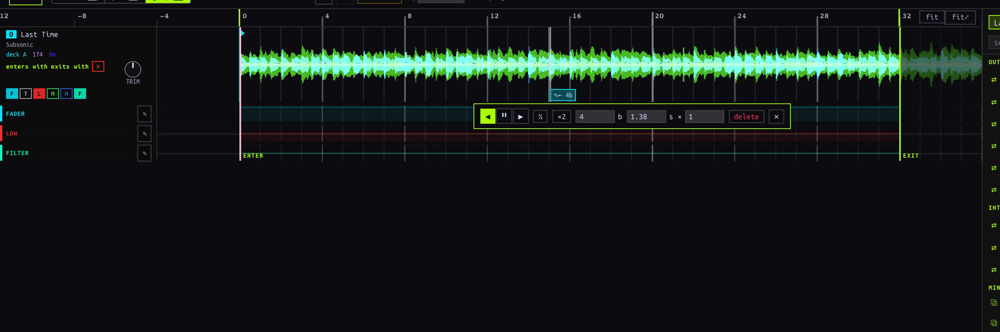
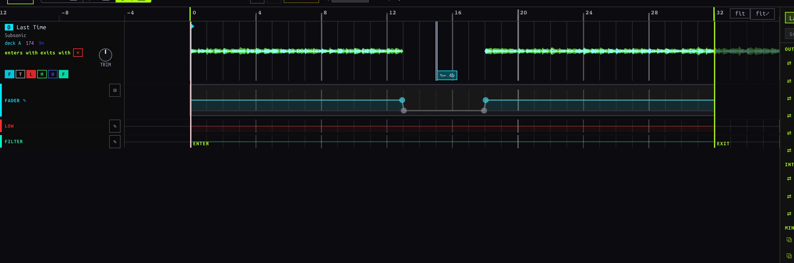
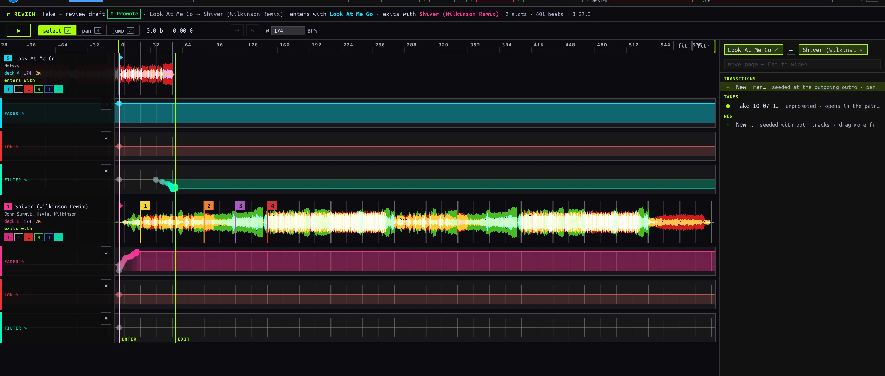

Mix editor
Build and review Transitions and multi-Track Routines on the slot timeline.
On this page
Find or start a mix
Open EDIT. The right-hand picker is a navigator, not a Deck: search for a Track, use the loaded-Deck shortcuts, or choose a saved artifact. One Track chip lists moves out of and into it; two chips specify an ordered outgoing → incoming pair. ⇄ reverses that direction. With two chips, choose a saved Transition, New Transition, an unpromoted Take, or + New blank mix seeded with those Tracks. With no chips, browse Routines, Routine Takes and candidates, or start a blank mix. ↑/↓ and Enter navigate picker results; Escape clears the search, then the second chip, then the first. The header's ◀/▶ cycle siblings of the current pair or cast. A Cameo may appear in the picker, but its editor currently reports that Cameo editing is not available here.

Ordered pair in the picker; Select, Pan, Jump, undo and audition controls above the timeline.
| Start | What exists immediately | What saves it |
|---|---|---|
| New Transition for an ordered pair | A two-slot seeded draft | The first actual edit, via autosave; opening or auditioning does not save |
| + New blank mix | A blank, in-memory draft; selected Track chips seed slots | Two slots become a Transition, three or more a Routine, after an edit; zero or one never persist |
| Saved Transition or Routine | The existing artifact and its editable timeline | Subsequent edits autosave |
| Unpromoted Take or Routine candidate | A review draft over captured evidence | ↑ Promote, not audition or navigation |
Add and arrange slots
- Choose + New blank mix. Drag a Library Track onto the empty canvas; drag another onto the timeline. The insertion line displays its entry beat. Drop location snaps to a four-beat bar; hold Shift while dropping to place between bars. A Track without BPM is skipped. Hot Cue 1, if present, supplies its initial playback position; otherwise it starts at the beginning. Multiple dragged Tracks enter in succession.
- Read each slot panel: its number is entry order, not the letter of a physical Deck. The first slot enters with the mix; the last exits with it. A Track can occur in more than one slot. Newly added slots receive an initial closed-to-open fader step; expand the lane to adjust it.
- Use Select (V) and drag a waveform row horizontally to shift its entry and authored material. Drag vertically across a neighboring row to reorder Routine entries. Alt-drag slides Track material under the clock without moving its authored automation. Hold Shift during a drag to bypass snapping. Click rows to select; Cmd/Ctrl-click toggles and Shift-click selects a range. Drag one selected row to move the selected group.
- In a Routine, edit a later slot's Start beat or its left start handle to shorten or reveal its intro without shifting later events. Drag playback-bound handles to crop the Routine without deleting outside material; ↺ restores source bounds. The entry slot uses playback start instead. Pair Transitions do not have these Routine-only handles.
- Use a slot panel's ✕ to remove an authored slot. The remaining slots re-number by entry position, while their lane and Jump edits stay with their original slot identities. Undo if removal was accidental.

Zero-slot canvas: add the first Track from the Library below; nothing is saved yet.

Select-mode horizontal drag shifts the incoming slot from its seeded bar to a later bar.

Seven entry-ordered slots in a saved Routine; cast order is distinct from physical Deck assignment.
Current kind boundary: zero or one slot remains a draft. Two slots persist as a Transition; three or more as a Routine. Adding a third slot to a saved authored Transition, or removing the third from a saved authored Routine, converts on save and re-points Set pins. Check the conversion notice and the Set afterward. A recorded Routine's immutable source cast is not a blank authored cast; do not assume removing a recorded slot changes its evidence.
Select, Pan and Jump
| Mode | Shortcut | Canvas gesture |
|---|---|---|
| Select | V | Select slot rows; drag to align or reorder; edit expanded lane nodes and trim handles. Default mode. |
| Pan | H | Drag to navigate horizontally/vertically without moving a slot. Hold H momentarily, then release to return to the prior mode; a tap leaves Pan active. |
| Jump | J | Click a slot's waveform row to insert a Jump at that beat; select its marker to configure it. |
The ruler and empty timeline background seek rather than insert a Jump. fit frames the window; fit⤢ includes surrounding Track material. Zoom around the cursor with Ctrl/Cmd-wheel or pinch, pan horizontally with a horizontal wheel gesture. Escape closes a Jump popup, clears a selection, then returns to Select.
To repeat a buildup, choose Jump (J), click the slot waveform at the intended mix instant, then configure the popup: ◀ replays backward, ▶ skips forward, and ⏸ holds (Routine only). Set distance in beats b or seconds s, use ½ / ×2 to resize, and for backward Jumps set × repeats (1–64). The initial Jump is four Track beats backward. Drag the marker to change its time, or click it and choose delete. A recorded marker instead offers ✎ edit (replace with an editable copy) or remove (play through the discontinuity). Removing recorded evidence changes the draft's interpretation, not the raw Session record. In Select, double-clicking a waveform also inserts a Jump.

A backward four-beat Jump on a one-slot draft; direction, beats, seconds and repeats are editable in the popup.
Draw automation and stamp a Chop
Use the lane chips under a slot to show fader, LOW EQ, filter, trim, MID EQ or HIGH EQ (fader, LOW EQ and filter show initially). On a recorded strip, click ✎ to author an editable envelope over it; ⊟ collapses the editor, and ↺ on a collapsed authored strip removes the authored override so the recorded lane plays again. A Transition has no editable trim lane.
In an expanded lane, click the curve preview to add a breakpoint, drag a point to change time or value, double-click it to delete. Drag empty lane space to box-select nodes; Cmd/Ctrl-click toggles a node, Cmd/Ctrl-drag selects a time span, and dragging a selected node moves the group. Delete/Backspace removes selected nodes (the lane keeps at least one). Alt-drag shifts the envelope in time. For a quick full cut, Shift-drag across empty lane space to stamp a rectangular Chop between beats, or Shift-click for a one-beat cut. The resulting walls are normal editable breakpoints. Shift also disables magnets during node moves.

Shift-drag stamped a fader cut with editable walls; the waveform above reflects the cut.
Audition and take over
Press ▶ or Space outside a text field to audition; the first press may show loading while the editor arms the shared Decks. Press again to cancel arming, or pause a playing audition. Opening an artifact alone does not claim the audible surface. Audition automation drives the shared Mixer; it is not captured as a new Take. A manual Mixer gesture or transport/pitch/jog/key-lock gesture on a driven Deck takes over: editor automation stops, but sounding Decks continue under your control. Gestures on an undriven Deck do not necessarily take over.
Review a Take and Promote
Open a handover Take from Sessions or HISTORY. The header reads REVIEW. The app derives an editable Transition draft from the recorded events: inspect slot timing, Jumps and lanes; adjust and audition before ↑ Promote. The original Take remains separate evidence. A Routine Take or mined candidate opens a Routine review preview; promoting a candidate first confirms a Routine Take. Switching away from an unpromoted review loses its draft edits. A recorded Cameo Take is not currently promoted through the handover history action; do not treat a Cameo as a Transition merely because both appear in history.

A handover Take opened for review; Promote is the explicit persistence action.
Saving, undo and errors
There is no Save button. Edits to persisted artifacts autosave after a short pause (about 700 ms); ✎ edited means a draft changed, not that the server acknowledged it. Wait for a write before leaving, especially after structural edits; navigation does not promise to flush a pending save. ↩ / ↪ or Cmd/Ctrl+Z / Cmd/Ctrl+Shift+Z undo/redo editor gestures. A drag is one history step. Selection and view navigation are not content changes. Undo history is scoped to the opened artifact, not a global history across mixes.
Authored Routine create/structure failures can show Save failed: …; some Transition and edits-autosave failures currently log to the developer console instead of displaying a visible recovery notice. If a change appears not to stick, stop editing, inspect the console/error, and verify by reopening the artifact; do not assume automatic retry. Promotion is a separate explicit write—check that the REVIEW badge changes before treating it as saved.